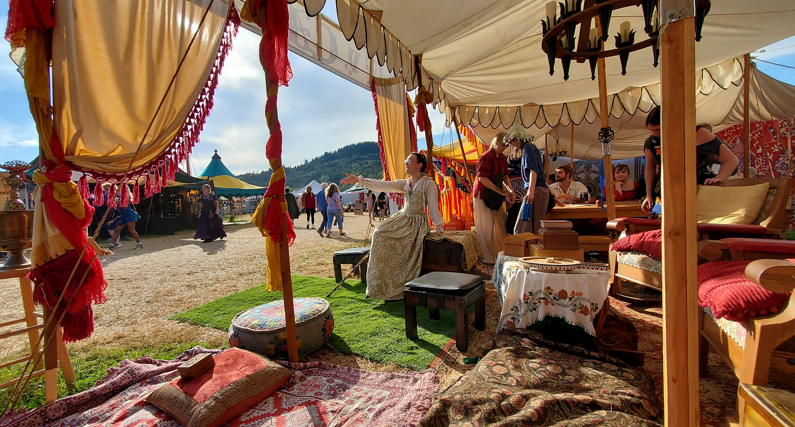
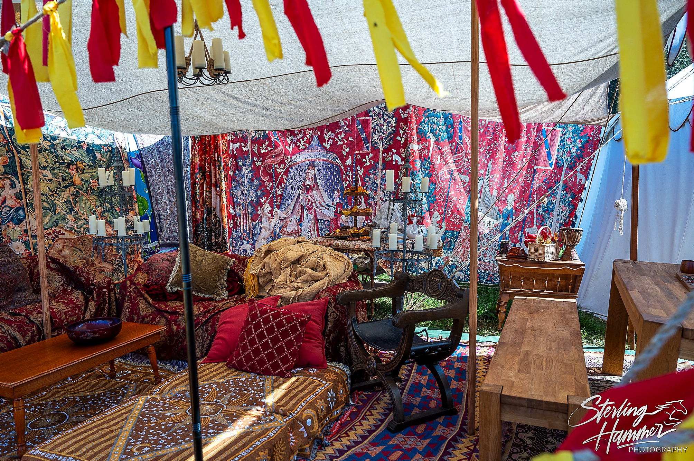
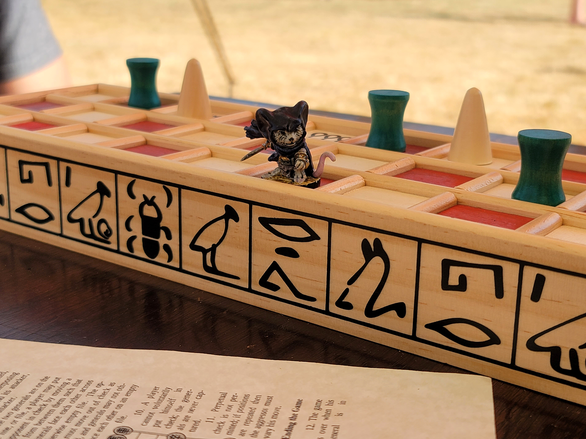

Life at the Guild
Real people, real history, and a pavilion that makes room for discovery.
The real Guild
A look behind the curtain
Our theatrical Cat and Canary are fictional, but the people, canvas, boards, and hospitality are real. These photographs show the environment that our volunteers build and share. We use authentic Guild photos, not synthetic illustrations of members presented as documentary images.
Photography is shown for director review; permissions, credits, and publication approvals must be checked before a public launch.



